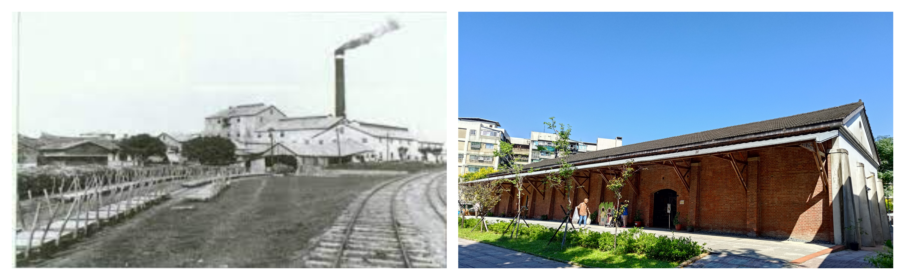

糖廠變身文化基地
這裡曾是「臺北製糖所」的倉庫，現在變成說糖業故事的大教室！

圖片來源：臉書臺北艋舺之源、國家文化資產網
📌 快速認識
- 年紀：超過100歲（1911年出生）
- 身分：市定古蹟（2003年認證）
- 地址：萬華區大理街132-10號
- 開放時間：週二~週日 10:00-17:00
猜猜看：製糖廠為什麼選在萬華？
A. 這裡最甜
B. 風水最好
C. 水路運輸方便
正解：C！此處為新店溪、大嵙崁溪合流點，又與鐵路連結，水路運輸利於集散輸出，也具有水道設施，適合製糖與運送～
（資料來源：臺北製糖所維基百科）
糖廠的時光旅行
1911
甜蜜的開始
日本時代設立「台北製糖株式會社」，為北臺灣第一家新式製糖廠，每日壓榨甘蔗量為700公噸，產糖量為80公噸
1943
再見了甘蔗
總督府禁止製造耕地白糖，原設備移轉至戰力化工廠，臺北製糖所宣布廢止，廠房設施也逐日拆毀。
2003
老屋新生命
糖廠倉庫變成市定古蹟，開始文化園區計畫
臺北製糖所停產的主要原因？
A. 機器老舊
B. 糖廠設備移轉至戰力化工廠
C. 戰爭破壞
正確答案：B！因太平洋戰爭爆發，戰事吃緊，原設備移轉至戰力化工廠，臺北製糖所宣布廢止，廠房設施也逐日拆毀
（資料來源：臺北製糖所維基百科）
發現老建築的秘密

2002年台糖公司捐獻火車
🔍 觀察任務
找找看園區這些特別的建築設計：
- TR磚月台：月台以TR磚砌成，長達50公尺、寬20公尺
- 大跨距木桁架：利用木桁架撐起倉庫所需的空間
- 建築特色：紅磚外牆、拱門、梯形柱
糖廠倉庫的大跨距設計主要目的是？
A. 方便堆放甘蔗
B. 看起來氣派
C. 節省建築材料
正確答案：A！無柱空間可堆放更多甘蔗原料
（資料來源：古蹟修復報告）
砂糖誕生記
從甘蔗到砂糖需要經過7道魔法程序：
- 撕開甘甜源（撕裂）
- 榨出甜蜜汁（壓榨）
- 雜質說掰掰（清淨）
- 濃縮變糖漿（蒸發）
- 糖膏小魔法（煮糖）
- 糖蜜分離術（分蜜）
- 乾燥室定型（乾燥）
哪個步驟能讓蔗汁變成糖漿？
正確答案：B！過濾後的蔗汁，會送到預熱器加熱至到105℃左右，再送到多效蒸發罐濃縮成糖漿～
（資料來源：台糖通訊）